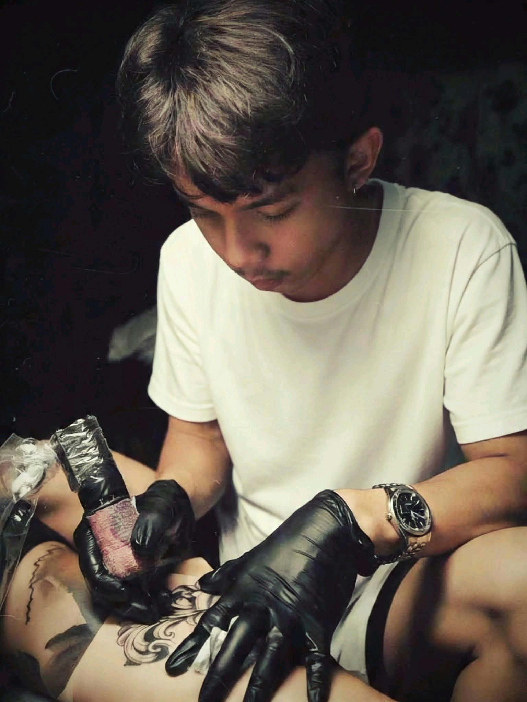
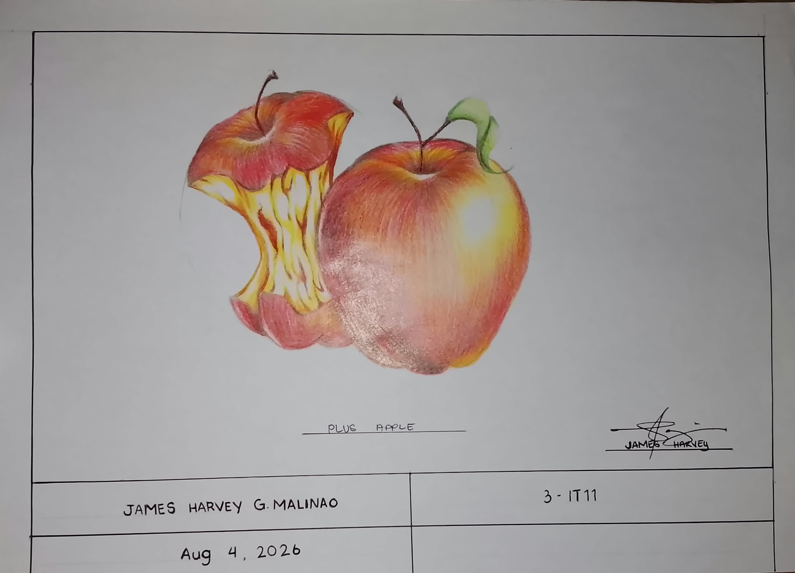
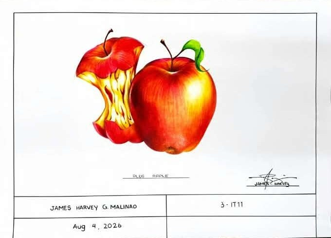
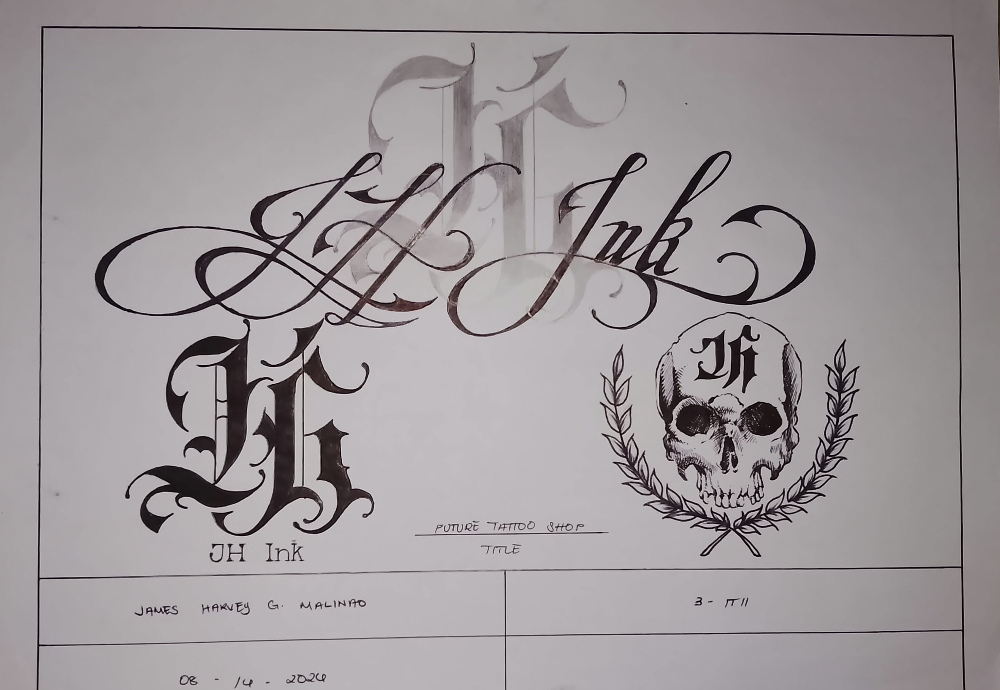
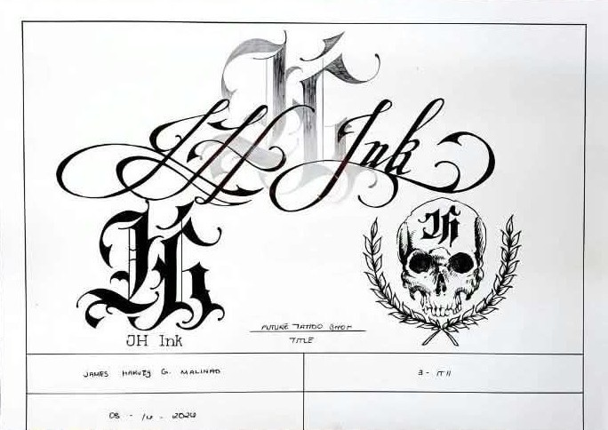
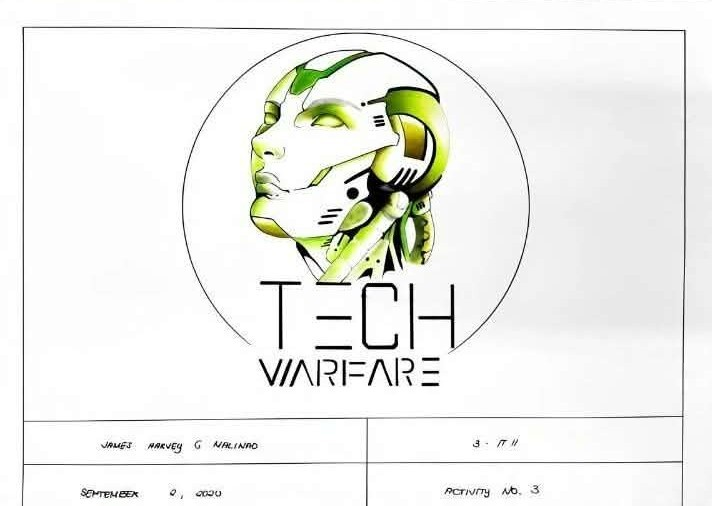
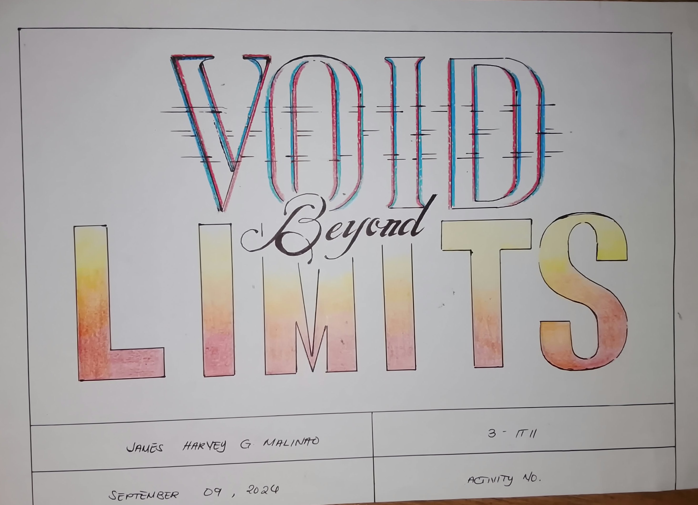
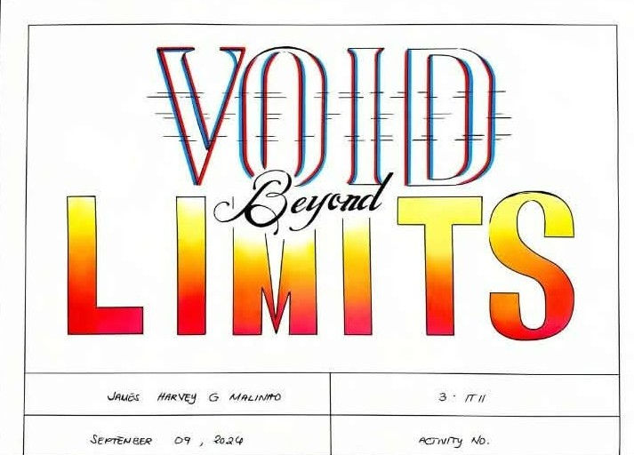
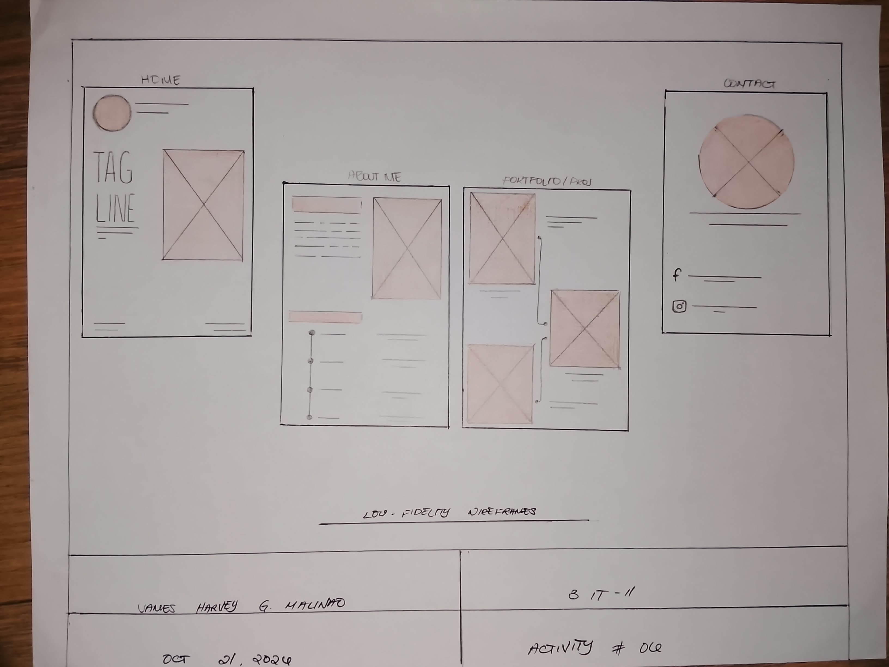
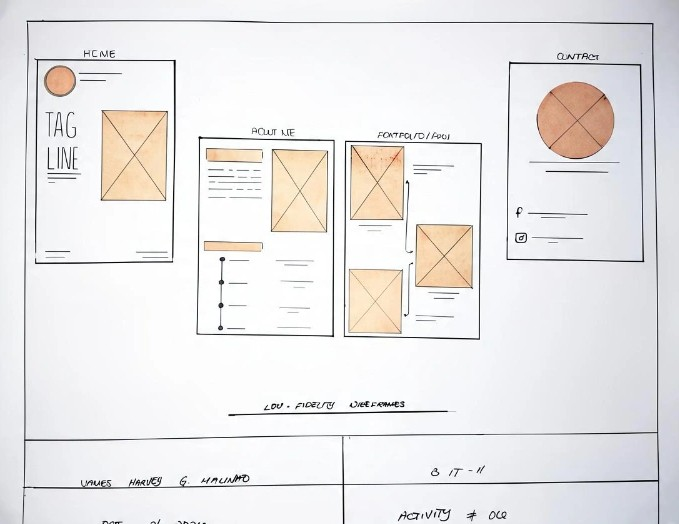

Traditional Drawing
Graphite, charcoal, line work, shading, and portrait studies.
DRAW • CREATE • EXPRESS
Hi, I'm James Harvey — a BSIT student and visual artist who enjoys drawing portraits, exploring different styles, and learning the craft of tattooing.

01 / ABOUT ME
My journey started with simple sketches in a notebook. Over time, drawing became more than a hobby — it became a way for me to express ideas, emotions, and stories.
I enjoy portrait drawing, charcoal work, digital design, and visual experimentation. I am also learning tattooing, where creativity, patience, safety, and trust all matter.
I'm still growing as an artist, but every new piece gives me a chance to learn something and create something meaningful.
02 / SKILLS
Graphite, charcoal, line work, shading, and portrait studies.
Facial proportions, expressions, details, and realistic studies.
Composition, typography, simple branding, and digital artwork.
Design preparation, linework practice, hygiene awareness, and client communication.
Turning references and ideas into original visual concepts.
Careful observation and steady improvement through practice.
03 / EXPERIENCE
Personal Practice • Calamba, Philippines
Creating portrait drawings, visual studies, and tattoo concepts while building a personal portfolio.
Independent Practice
Explored tattoo design, linework, practice skin, preparation, and the responsibilities involved in working with clients.
Personal Projects
Developed drawing skills through pencil and charcoal studies, references, and personal artwork.
04 / EDUCATION
City College of Calamba
Information Technology • College Student
My IT studies also help me explore web design, digital creativity, and technology-based ways of presenting art.
MY CREATIVE WORK
Explore my artwork, from traditional drawing and portrait studies to digital graphics, typography, and interface design.


A traditional portrait study using graphite and colored pencils. This artwork explores facial details, careful shading, and color blending to create depth and expression.
Medium: Graphite and Color Pencil


A tattoo-inspired branding concept that transforms a hand-drawn idea into a digital logo. The design focuses on lettering, composition, and a distinctive visual identity.
Medium: Pencil Sketch and Digital Design

A technology-themed graphic design exploring a futuristic atmosphere. The composition uses visual hierarchy and digital imagery to create an engaging and bold presentation.
Medium: Digital Graphic Design


A lettering study that explores the arrangement and visual character of text. The design develops from a traditional draft into a digital composition with attention to spacing and balance.
Medium: Traditional Sketch and Digital Artwork


An early interface-planning concept that organizes content, screen elements, and layout structure before the final visual design. It helps establish the interface's basic arrangement.
Medium: Wireframe Sketch and Digital Layout
No artwork matches your search or selected category. Try another keyword or choose All Categories.
06 / CV
Replace the sample PDF filename with your actual CV before deployment.
07 / CONTACT
For commissions, collaborations, school projects, or art inquiries, send a message below.
Emailjamesharveymalinao21@example.com
LocationCalamba, Laguna, Philippines
SocialInstagram • Facebook